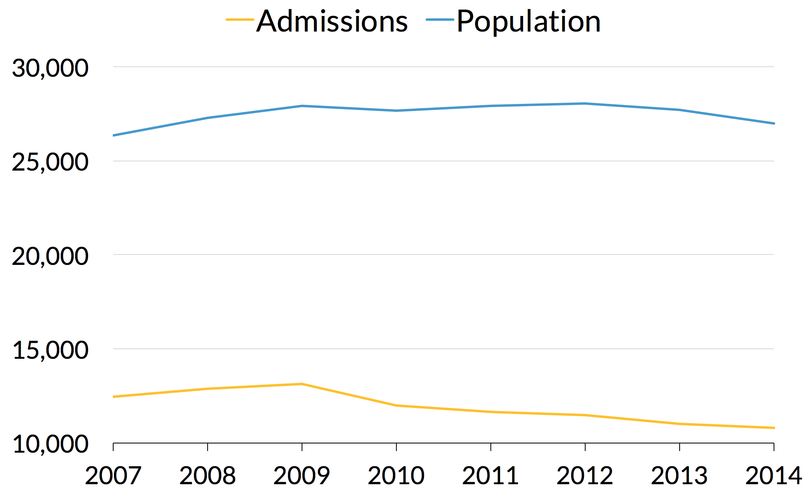
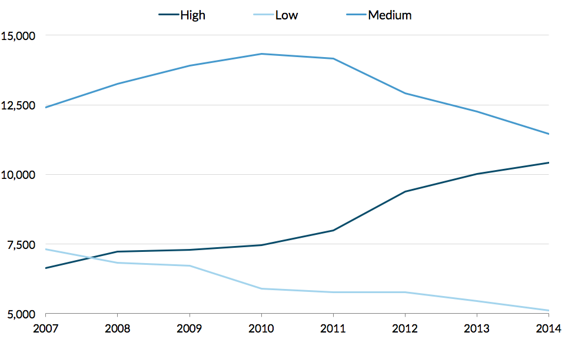

“The promise that I would be somehow healed from that didn’t happen, and I kind of spiraled out of control emotionally. I was just a wreck because I was supposed to feel better once he was on death row, and it just didn’t happen that way,” Wilson said. “What I was told about being healed and feeling better and all of these things—it didn’t work. It was a lie.”
For four and a half years, she struggled, searching for the healing that the conviction didn’t bring. She chased any diversion that would make her feel better, she said, until she hit a brick wall. Through meditation and Buddhist practice, she found a sense of peace and compassion that led her to forgive the man who killed her husband and rethink her stance on the death penalty.
Although she once believed that people in prison were just bad people, perhaps irredeemably so, Wilson said her perspective was radically transformed after she visited a women’s prison in Chowchilla, California, through an Insight Prison Project program.
“It was two of the most intensive, heartbreaking, healing, tear-filled days that I’ve ever experienced in my life,” Wilson said. “When I went in there, I was just sitting with women—with women from all walks of life, all different races, all different backgrounds, levels of income, levels of education. Just women that reminded me of family members, of friends.
“That whole mental construct that I had around who was incarcerated began to crumble. As I listened to their story, I thought, ’Well, that could’ve been me.’”
Wilson is careful to say that her story is not a prescription for healing, nor is it universal for all crime survivors. People harmed by serious crimes have diverse needs, yet we typically offer them a single, one-size-fits-all solution: a long prison sentence for the person who committed the harm with very few opportunities for that person to work toward personal transformation. But not all survivors crave retribution immediately after suffering trauma, and victims’ feelings may change over time, as Wilson’s did. By then, they may not be able to change that outcome.
Some survivors may demand long sentences for those who have harmed them mainly because no alternatives are available. With no other way to seek justice, they know that the person who committed the crime will receive either a long prison sentence or nothing at all.
Danielle Sered
Offering victims legitimate alternatives to prison can be transformative
Most important, our current system doesn’t ask victims what would serve them best. It fails to seek their input in a meaningful way, instead presuming that harsher punishments will mean more complete healing. But when asked, many people who have experienced the most serious crimes express a desire for restorative measures that might help them heal and prevent the violence they suffered from happening again. A 2016 survey showed that 61 percent of crime survivors are in favor of shorter prison sentences and increased investment in crime prevention and rehabilitation.
Proponents of tough sanctions often frame long prison terms as the only way to hold people accountable for committing serious crimes. But those who have personal experience with the prison system—formerly incarcerated people, crime survivors, and criminal justice professionals—are often quick to point out that punishment and accountability are not one and the same.
No one should mistake being incarcerated with being accountable. Those are two different things. When you’re incarcerated, you’ve just lost your freedom. That does not mean in any way, shape, or form that you have taken responsibility for your crime. That is an internal process.
Dionne Wilson
What real accountability looks like
Accountability requires people to accept responsibility for their actions and commit to never causing that harm again. Yet many people in prison never understand or accept the full scope of the harm they have caused others because they are emotionally and physically separated from it. Few are given the opportunity to speak directly to the survivors of their crimes; in fact, this contact is often expressly prohibited. Our courts and prisons discourage people from discussing their crimes openly, so many spend years in prison without even talking about what they have done. Without reflection, they may never truly understand and accept their culpability, much less how they might begin to make amends.
Liz Gaynes
Prison is not designed to hold people accountable for their crimes; it’s designed to punish them
Some assume that long prison terms encourage people to face their past, build skills, and achieve the personal awareness they need to transform themselves. But ample evidence suggests that longer prison terms are often inadequate or even counterproductive in motivating people to make positive change.
When people think they will be in prison for decades no matter what they do, they may be less motivated to take part in programming that might help them reenter society. In this sense, shorter prison terms can be a more powerful crime reduction strategy than long ones. By offering opportunities for earlier release, correctional systems can encourage people to undertake the hard work of self-improvement and leave prison more skilled and empowered to lead productive lives.
When you realize how hard the struggle is, there’s just no silver bullet. People are making up for a lot of lost years. They’re working their way through a lot of trauma, and they’re usually dealing with substance abuse or mental health issues—not always, but usually. Those things are not things that just vanish.
Communities that experience the most violence are often those with the highest rates of incarceration. People in these communities live with the damage that high incarceration rates can have on families and neighborhoods, and they see how prison fails to ensure community safety. It is often these communities that voice the strongest opposition to long-term incarceration and demand alternative ways of holding people accountable.
People in communities where we have enacted our experiment of mass incarceration witness the failure of incarceration to deliver on the promise of safety every single day. ...They have been promised a level of safety and a level of peace that would come out of our unprecedented investment in locking people up, and it has not delivered on that promise.
Danielle Sered
An enormous percentage of people who are in prison for violent crimes were victims and never got any kind of treatment or support. That doesn’t give them a license to kill, but it also doesn’t give us a license to have it turn out that the day you become a perpetrator, you cease being a victim. …They had never ever received any kind of support or treatment. All that stuff we say that victims should get, they never got
Liz Gaynes
Still, prisons are rarely equipped to assist people who have experienced trauma, and the prison environment itself often compounds this trauma and interferes with recovery.
Although many assume that long prison terms help deter crime, extensive evidence shows that the severity of punishment is not the key to changing people’s behavior. Long-term incarceration only punishes past actions, it does not prevent new harm, and communities devastated by violence deserve solutions that truly work.
Policymakers on both sides of the aisle recognize that mass incarceration is a growing, costly, and dangerous problem. But we can’t reverse mass incarceration without scaling back long prison terms,which will mean taking on the hard work of changing how we respond to violence and how we treat those who commit serious crimes.
For example, Alabama offers evidence that simply sending fewer people to prison or cutting time served for less serious offenses may not be enough to end mass incarceration.
In recent years, the state has seen a decline in the number of people serving shorter prison terms. But while the share of its prison population serving shorter terms has dropped, the share serving long terms has steadily climbed. Even though fewer people are being admitted to Alabama prisons, the state’s prison population has stayed fairly flat because those serving long prison terms remain behind bars.
Reformers looking to meaningfully reduce prison populations must not stop at low-level offenses. They will need to address this “stacking effect” with more ambitious changes to bend the curve.
Alabama Stock and Admissions, All Offense Types

Alabama Prison Population by Time Served Category

In addition, it is disproportionately expensive to house people serving long prison terms.
According to the most recent data available for each state, people in state prisons had spent a combined 5,898,950 years behind bars. People who had served the longest 10 percent of prison terms accounted for 42 percent of that time—2,471,085 years—requiring nearly half the resources spent so far on the incarcerated population.
And because people serving the longest prison terms tend to be older than the rest of the prison population, they likely incur additional costs for health care—a dimension our analysis does not capture.
Long-term incarceration fails to effectively hold people accountable for their crimes, motivate them to make positive change, address victims’ needs, or even deter crime. We must develop more fair and effective responses to serious crime.
Addressing long-term incarceration means grappling with the fact that 9 in 10 people serving the longest prison terms were convicted of a violent offense. Policy conversations about justice reform often focus on nonviolent drug or property crimes, but most people convicted of nonviolent offenses leave prison after a few years. Those convicted of violent crimes remain serving longer sentences. Of people who entered prison in 2000 (in states that provided data), 84 percent of those still incarcerated 14 years later were there for a violent offense.
2000 Entry Cohort by Offense Type
![A stacked area chart, showing the percent breakdown by offense type (violent, property, drug, and other) of the 2000 admission cohort of people in prison, for 17 states reporting data between 2000 and 2014. In 2000, TK of the cohort were in prison for violent offenses, TK for property offenses, TK for drug offenses, and TK for other offenses. By 2014, of the people admitted in 2000 who were still incarcerated, TK were incarcerated for violent offenses, TK for property offenses, TK for drug offenses, and TK for other offenses.](img/graphs/area-chart.png)
Note: 17 states reporting 2000-2014
States have shown a growing commitment to invest in alternatives to incarceration for low-level crimes, like drug courts, mental health courts, and other problem-solving courts that address the underlying causes of crime. The juvenile justice system has also demonstrated remarkable success keeping many young people out of detention without compromising public safety. Yet there has been little investment in alternatives to incarceration for adults who commit serious offenses.
People with serious criminal histories are often ineligible to participate in alternative courts and restorative programs despite evidence that they work just as well, if not better, for people who have committed serious crimes. Instead, many states introducing sentencing reforms for low-level convictions have maintained or even raised their penalties for violent crimes. Since 2000, time served in prison has risen faster than average for those convicted of a violent crime and fastest for those convicted of homicide.
Our research and our conversations with people who have served long prison terms, survivors of violent crime, policy experts, and practitioners have led us to a set of core principles we believe should guide decisionmaking:
- Sentences should be proportionate to the offense and the circumstances surrounding it. Our justice system must be consistent and fair for people who commit similar crimes, but one-size-fits-all approaches too often encourage excessive punishment. Decisionmakers should take individual characteristics and unique circumstances into account when charging and sentencing people.
- Punishments should be no more severe than necessary to achieve safety and healing. Long prison terms should be imposed only when justified by evidence, not by default. Decisionmakers should prioritize solutions that encourage rehabilitation and reduce recidivism.
- Victims must be offered more than one way of seeking justice. Our justice system should empower victims by providing them with meaningful avenues to voice their needs. We must also invest in other responses to violent crime besides long-term incarceration that prioritize survivors’ well-being by promoting true accountability and reducing recidivism.
- Reforms must seek to dismantle systemic disparities. All solutions to mass incarceration must consciously seek to eliminate disparities along racial and ethnic lines so as not to inadvertently reinforce them.
Guided by these principles, we recommend the following changesto policy and practice:
- Allow for individualized sentencing and release decisions. States should repeal mandatory minimums and requirements that people serve a set amount of their sentence regardless of demonstrated personal progress while incarcerated.
- Introduce or expand opportunities and incentives for early release. In states with parole systems, policymakers should review eligibility requirements and parole decisionmaking protocols to assess whether these practices give people opportunities to take advantage of life-changing programming. For states lacking a parole release provision, the Model Penal Code recommends a “second look” provision that would allow a court to review an application for resentencing. This would introduce new flexibility to determinate systems, allowing decisionmakers to take individual circumstances into account after the fact and impose an appropriate level of punishment. Policymakers can also expand options for people to earn time off of their sentence for program participation and rules compliance. To address the unique needs of women serving long sentences, prisons must ensure that the programming they provide is gender-responsive.
- Assess candidates for parole based on who they have become, not on the seriousness of the original offense. Release decisions should be made based on what has happened since a person was incarcerated, not simply the circumstances of the criminal offense.
- Establish a standard of presumptive parole. Grant parole by default when candidates first become eligible unless there is clear evidence that their release poses a significant threat to public safety. Grant medical or geriatric parole to people with serious health challenges, especially the elderly.
- Provide specialized reentry programming for people serving long prison terms. People who leave prison after a long time have unique reentry needs. Organizations like the Fortune Society offer a model for wraparound reentry programming that begins while people are still in prison and extends well beyond their release.
- Invest in promising alternatives to long prison terms for people who commit serious crimes. Restorative justice, for instance, has gained recognition as a powerful way to hold people accountable for the harm they cause and ensure that victims’ voices are heard. In practice, these programs are often limited to cases involving low-level crime. But programs like Common Justice in New York have shown that this approach works in cases of violent crime as well. Savings from shorter prison terms should be reallocated to support the development and expansion of restorative justice programs that more effectively achieve the goals of public safety and victim satisfaction.
- Commit to policies and practices that reduce systemic disparities. One strategy is to use racial and ethnic impact statements that help assess how proposed criminal justice legislation may affect racial disparities. Agencies must also commit to tracking race and ethnicity data at every point in the justice system to understand and address these disparities.
- Invest in prevention. In its broadest form, preventing serious crime means investing in priorities like economic development, affordable housing, early childhood education, and racial equity–all key factors in social stability that are undermined by an overly punitive justice system. Efforts targeted specifically at reducing crime in high-risk areas include initiatives like Cure Violence and Project Safe Neighborhoods.